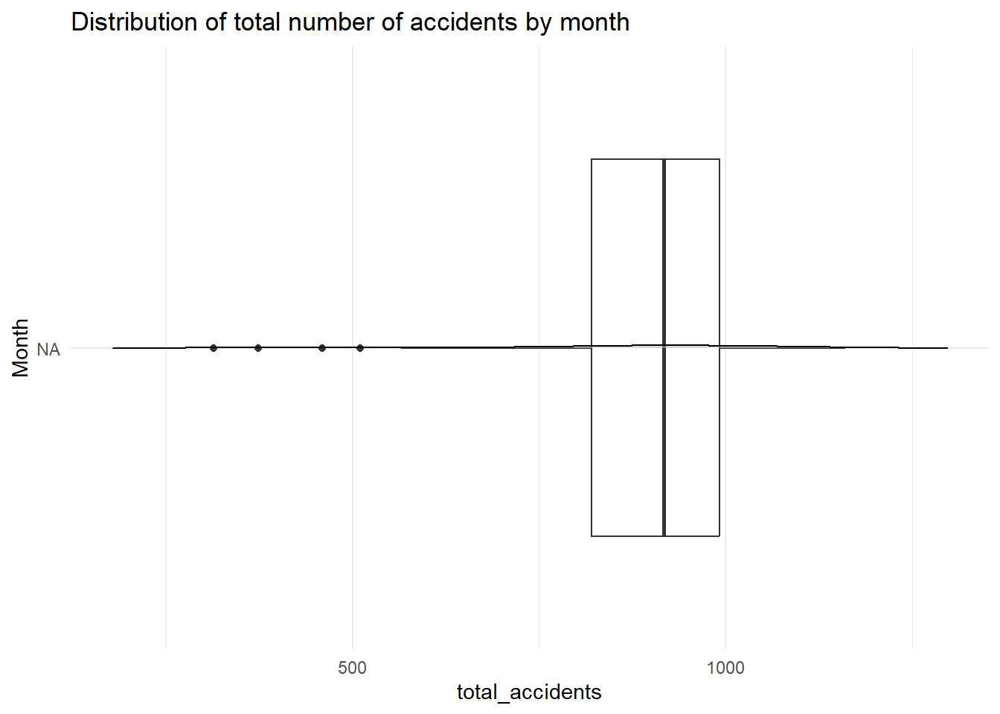
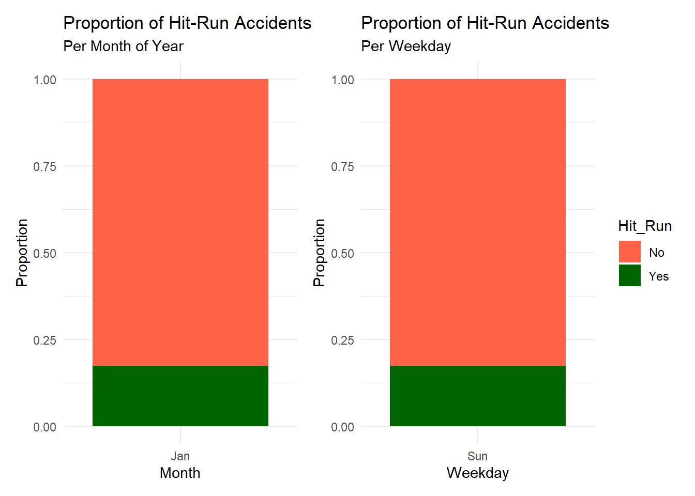

Warning: package 'tidyverse' was built under R version 4.3.1
Warning: package 'ggplot2' was built under R version 4.3.2
Warning: package 'purrr' was built under R version 4.3.1
Warning: package 'dplyr' was built under R version 4.3.1
── Attaching core tidyverse packages ──────────────────────── tidyverse 2.0.0 ──
✔ dplyr 1.1.3 ✔ readr 2.1.4
✔ forcats 1.0.0 ✔ stringr 1.5.0
✔ ggplot2 3.4.4 ✔ tibble 3.2.1
✔ lubridate 1.9.2 ✔ tidyr 1.3.0
✔ purrr 1.0.2
── Conflicts ────────────────────────────────────────── tidyverse_conflicts() ──
✖ dplyr::filter() masks stats::filter()
✖ dplyr::lag() masks stats::lag()
ℹ Use the conflicted package (<http://conflicted.r-lib.org/>) to force all conflicts to become errors
Code
library(leaflet)
Warning: package 'leaflet' was built under R version 4.3.2
Code
library(leaflet.extras)
Warning: package 'leaflet.extras' was built under R version 4.3.2
Code
library(dplyr)library(ggplot2)library(ggmap)
Warning: package 'ggmap' was built under R version 4.3.2
ℹ Google's Terms of Service: <https://mapsplatform.google.com>
Stadia Maps' Terms of Service: <https://stadiamaps.com/terms-of-service/>
OpenStreetMap's Tile Usage Policy: <https://operations.osmfoundation.org/policies/tiles/>
ℹ Please cite ggmap if you use it! Use `citation("ggmap")` for details.
ℹ Using "','" as decimal and "'.'" as grouping mark. Use `read_delim()` for more control.
Warning: One or more parsing issues, call `problems()` on your data frame for details,
e.g.:
dat <- vroom(...)
problems(dat)
Rows: 95584 Columns: 35
── Column specification ────────────────────────────────────────────────────────
Delimiter: ";"
chr (28): Report_Number, Agency_Name, ACRS_Report_Type, Crash_Date_Time, Hit...
dbl (7): Local_Case_Number, Mile_Point, Lane_Number, Number_of_Lanes, Dista...
ℹ Use `spec()` to retrieve the full column specification for this data.
ℹ Specify the column types or set `show_col_types = FALSE` to quiet this message.
Rows: 198 Columns: 2
── Column specification ────────────────────────────────────────────────────────
Delimiter: ","
chr (1): holiday
date (1): date
ℹ Use `spec()` to retrieve the full column specification for this data.
ℹ Specify the column types or set `show_col_types = FALSE` to quiet this message.
# A tibble: 6 × 5
Crash_Date_Time Weather Hit_Run First_Harmful_Event At_Fault
<chr> <chr> <chr> <chr> <chr>
1 06/30/2023 10:55:00 PM CLEAR No FIXED OBJECT DRIVER
2 06/30/2023 08:00:00 PM CLEAR No OTHER VEHICLE DRIVER
3 06/29/2023 11:53:00 AM CLEAR No FIXED OBJECT DRIVER
4 07/01/2023 01:48:00 AM CLOUDY Yes PARKED VEHICLE UNKNOWN
5 07/01/2023 12:52:00 PM CLEAR No PARKED VEHICLE DRIVER
6 06/30/2023 12:00:00 PM CLEAR No OTHER VEHICLE DRIVER
Code
#Separate time and Datedt_temporal$"Crash_Date_Time"<-as.POSIXct(dt_temporal$"Crash_Date_Time", format ="%m/%d/%Y %I:%M:%S %p", tz ="America/New_York")dt_temporal$Crash_Date <-as.Date(dt_temporal$"Crash_Date_Time", tz ="America/New_York")#I have a problem with the hours it doesn't show up welldt_temporal$Crash_Time <-format(dt_temporal$"Crash_Date_Time", "%H:%M:%S")dt_temporal
# A tibble: 95,584 × 7
Crash_Date_Time Weather Hit_Run First_Harmful_Event At_Fault Crash_Date
<dttm> <chr> <chr> <chr> <chr> <date>
1 2023-06-30 22:55:00 CLEAR No FIXED OBJECT DRIVER 2023-06-30
2 2023-06-30 20:00:00 CLEAR No OTHER VEHICLE DRIVER 2023-06-30
3 2023-06-29 11:53:00 CLEAR No FIXED OBJECT DRIVER 2023-06-29
4 2023-07-01 01:48:00 CLOUDY Yes PARKED VEHICLE UNKNOWN 2023-07-01
5 2023-07-01 12:52:00 CLEAR No PARKED VEHICLE DRIVER 2023-07-01
6 2023-06-30 12:00:00 CLEAR No OTHER VEHICLE DRIVER 2023-06-30
7 2023-06-30 18:00:00 CLEAR Yes PARKED VEHICLE DRIVER 2023-06-30
8 2023-06-29 13:03:00 CLEAR No FIXED OBJECT DRIVER 2023-06-29
9 2023-06-26 16:26:00 CLEAR No OTHER VEHICLE DRIVER 2023-06-26
10 2023-06-29 12:59:00 CLEAR No OFF ROAD DRIVER 2023-06-29
# ℹ 95,574 more rows
# ℹ 1 more variable: Crash_Time <chr>
Code
#ggplot(dt_temporal, aes(x = as.factor(Crash_week))) +#stat_count() +#labs(title='Number of car crash per weeks')
`summarise()` has grouped output by 'Year', 'Month', 'first_day_of_month'. You
can override using the `.groups` argument.
Code
### create a ts objectfirst_date_in_data <-min(dt_temporal$first_day_of_month)last_date_in_data <-max(dt_temporal$first_day_of_month)
Code
start_date =min(dt_temporal$Crash_Date)end_date =max(dt_temporal$Crash_Date)date_sequence <-seq(as.Date("2014-12-28"), end_date, by ="week")dt_temporal$Crash_week <-cut(dt_temporal$Crash_Date, breaks =c(date_sequence, Inf), labels =as.factor(date_sequence), include.lowest =TRUE)dt_temporal_red <- dt_temporal %>%filter(Crash_Date >as.Date("2013", format ='%Y')) %>%group_by(Crash_week) %>%mutate(Count_week =n()) %>%arrange(Crash_week)#Create a new table to remove the iteration where there are multiple time the same combination for the columns Crash_week and Count_week.dt_temporal_week <- dt_temporal_red %>%distinct(Crash_week, Count_week, .keep_all =TRUE)%>%mutate(Crash_week =as.Date(Crash_week, format ="%Y-%m-%d")) %>%mutate(Crash_month =month(Crash_week))# # mutate(is_holiday = ifelse(Week_with_holiday %in% weeks_with_holiday$Week_with_holiday, "Yes", is_holiday)) %>%# select(-Week_with_holiday)ggplot(dt_temporal_week, aes(x = Crash_week, y = Count_week)) +geom_line(aes(group=1)) +#because we grouped earlier by Crash_week we need now to specify that we treat all the data as one group.geom_point() +labs(title='Number of car crash per weeks')+theme(axis.text.x =element_text(angle =45, hjust =1)) +# Set breaks to 1 month intervalscale_x_date(date_breaks ="1 year", date_labels ="%Y")
# Create a new column for the week of the year# Step 1: Create a data frame with all days in the yearall_days <-data.frame(date =seq(min(dt_temporal$Crash_Date), max(dt_temporal$Crash_Date), by ="days"))# Step 2: Merge the data frames based on the weekmerged_df <-inner_join(all_days, holiday_data, by ="date")# Step 3: Create a new column "Is_Holiday" based on the merging resultsmerged_df$is_holiday <-ifelse(!is.na(merged_df$is_holiday), "Yes", "No")merged_dy_for_temporal_day <- merged_dfmerged_df$first_day_of_week_new <-floor_date(merged_df$date, "week")merged_df$weekday1 <-weekdays(merged_df$first_day_of_week)result_df <- merged_df %>%group_by(first_day_of_week_new) %>%summarise(is_holiday =if ("Yes"%in% is_holiday) "Yes"else"No")
Code
dt_temporal_week <-left_join(dt_temporal_week, result_df, by =c("Crash_week"="first_day_of_week_new"))dt_temporal_week <-mutate(dt_temporal_week, is_holiday =ifelse(is.na(is_holiday), "No", is_holiday))ggplot(dt_temporal_week, aes(x = Crash_week, y = Count_week)) +geom_line(aes(group=1)) +#because we grouped earlier by Crash_week we need now to specify that we treat all the data as one group.geom_point(aes(color = is_holiday)) +labs(title='Number of car crash per weeks')+theme(axis.text.x =element_text(angle =45, hjust =1)) +# Set breaks to 1 month intervalscale_x_date(date_breaks ="1 year", date_labels ="%Y")
Comment : We can visualize thanks to the time series representation the Covid crisis which lead to a reduction of car accident in 2020 since less cars were on the roads. Since then, the average number of accidents is a bit lower than pre-covid.
`summarise()` has grouped output by 'Year', 'Month'. You can override using the
`.groups` argument.
Code
dt_temporal_day <-left_join(dt_temporal_day, merged_dy_for_temporal_day, by =c("Crash_Date"="date"))ggplot(dt_temporal_day |>filter(Year ==2019), aes(x = Crash_Date, y = total_crash)) +geom_line(aes(group=1)) +#because we grouped earlier by Crash_Date we need now to specify that we treat all the data as one group.geom_point(aes(color = is_holiday)) +labs(title='Number of car crash per weeks')+theme(axis.text.x =element_text(angle =45, hjust =1)) +# Set breaks to 1 month intervalscale_x_date(date_breaks ="1 year", date_labels ="%Y")
a |>group_by(Month) |>summarise(count=n()) #count(Month)
# A tibble: 10 × 2
Month count
<fct> <int>
1 January 9
2 February 5
3 March 4
4 May 5
5 July 1
6 August 2
7 September 4
8 October 5
9 November 10
10 December 11
Code
#holiday_data
Code
dt_temporal_day <-mutate(dt_temporal_day,crash_day_no_year =format(Crash_Date, "%m-%d"))Month_list <-c("January", "February", "March", "April", "May", "June", "July", "August", "September", "October", "November", "December")##################################### data for d3 - mean crash per day over yearsc <- dt_temporal_day |>filter(Year!=2020& Year<2023)|>group_by(Month, crash_day_no_year) |>summarise(total_crash =mean(total_crash)) |>mutate(day_only =factor(substr(crash_day_no_year, 4, 5)))
`summarise()` has grouped output by 'Month'. You can override using the
`.groups` argument.
Code
write_csv(c, "data/mean_crash_per_day_over_years.csv")############################################################## let's see how this graph should look like in d3:b <- dt_temporal_day |>filter(Year!=2020& Year<2023)|>filter(Month %in%Month_list[1:7]) |>group_by(Month, crash_day_no_year) |>summarise(total_crash =mean(total_crash)) |>mutate(day_only =factor(substr(crash_day_no_year, 4, 5)))
`summarise()` has grouped output by 'Month'. You can override using the
`.groups` argument.
Code
# # Create the plot# ggplot(b, aes(x = crash_day_no_year, y = total_crash, color = Month)) +# geom_point() +# facet_grid(~Month)+# labs(y = "Total Crash") # Create the plotggplot(b, aes(x = day_only, y = total_crash, color = Month, group=Month)) +geom_point() +geom_line(alpha =0.6)+#facet_grid(Month~., scales = "free_x", space = "free_x") +labs(y ="Total Crash")
# A tibble: 9 × 7
# Groups: Year [9]
Year Month Crash_Date total_crash holiday is_holiday crash_day_no_year
<dbl> <fct> <date> <int> <chr> <chr> <chr>
1 2015 July 2015-07-01 8 Canada Day Yes 07-01
2 2016 January 2016-01-23 2 <NA> <NA> 01-23
3 2017 May 2017-05-29 9 <NA> <NA> 05-29
4 2018 February 2018-02-07 13 <NA> <NA> 02-07
5 2019 January 2019-01-01 10 New Year's… Yes 01-01
6 2020 April 2020-04-06 5 <NA> <NA> 04-06
7 2021 March 2021-03-28 5 <NA> <NA> 03-28
8 2022 January 2022-01-05 8 <NA> <NA> 01-05
9 2023 November 2023-11-15 2 <NA> <NA> 11-15
Code
ggplot(dt_temporal_day, aes(x = Crash_Date, y = total_crash)) +geom_line(aes(group=1)) +#because we grouped earlier by Crash_Date we need now to specify that we treat all the data as one group.geom_point(aes(color = is_holiday)) +labs(title='Number of car crash per weeks')+theme(axis.text.x =element_text(angle =45, hjust =1)) +# Set breaks to 1 month intervalscale_x_date(date_breaks ="1 year", date_labels ="%Y")
Comment : One can see an asymmetry between the bad and good conditions. It seems that bad conditions does not necessarily imply a higher number of accidents. However to be sure about that we need to have the proportion of the number of days where the road conditions were good or not.
3.2.2 Hours of the day
Code
# we only care about the hours not the minutesdt_temporal <- dt_temporal %>%mutate(Crash_Time =paste0(substr(Crash_Time, start =1, stop =2),'h')) ggplot(dt_temporal, aes(x=Crash_Time))+geom_bar()+labs(x ='Hours in the day',y ='Number of Crash')
Comment : One can see that crash accidents occur more during the commute time especially the way back home between 15h to 17h.
Warning: package 'ggridges' was built under R version 4.3.1
Code
### Distribution of total number of accidents by monthggplot(dt_temporal_month) +geom_boxplot(mapping =aes(x = total_accidents, y = Month)) +geom_density_ridges(mapping =aes(x = total_accidents, y = Month), alpha =0.5) +theme_minimal() +labs(title ="Distribution of total number of accidents by month")
Picking joint bandwidth of 12.3

Code
#Distribution of total number of accidents by Day of weekggplot(dt_temporal_month) +geom_boxplot(mapping =aes(x = total_accidents, y = Week_day)) +geom_density_ridges(mapping =aes(x = total_accidents, y = Week_day), alpha =0.5) +theme_minimal() +labs(title ="Distribution of total number of accidents by weekday")
Picking joint bandwidth of 9.83
Code
library(ggridges)library(patchwork)
Warning: package 'patchwork' was built under R version 4.3.2
Code
dt_temporal_1 <- dt_temporal# Convert the Month column to display the abbreviation version# Create a list of month abbreviationsmonth_abbreviations <-c("Jan", "Feb", "Mar", "Apr", "May", "Jun", "Jul", "Aug", "Sep", "Oct", "Nov", "Dec")weekday_labels <-c("Sun", "Mon", "Tue", "Wed", "Thu", "Fri", "Sat")# Convert the Week_day column to display the abbreviation versiondt_temporal_1$Week_day <-ifelse(dt_temporal_1$Week_day =="Sunday", "Sun",ifelse(dt_temporal_1$Week_day =="Monday", "Mon",ifelse(dt_temporal_1$Week_day =="Tuesday", "Tue",ifelse(dt_temporal_1$Week_day =="Wednesday", "Wed",ifelse(dt_temporal_1$Week_day =="Thursday", "Thu",ifelse(dt_temporal_1$Week_day =="Friday", "Fri",ifelse(dt_temporal_1$Week_day =="Saturday", "Sat", dt_temporal_1$Week_day)))))))dt_temporal_1$Week_day <-factor(dt_temporal_1$Week_day , levels = weekday_labels)# Convert the Month column to display the abbreviation versiondt_temporal_1$Month <-ifelse(dt_temporal_1$Month =="January", "Jan",ifelse(dt_temporal_1$Month =="February", "Feb",ifelse(dt_temporal_1$Month =="March", "Mar",ifelse(dt_temporal_1$Month =="April", "Apr",ifelse(dt_temporal_1$Month =="May", "May",ifelse(dt_temporal_1$Month =="June", "Jun",ifelse(dt_temporal_1$Month =="July", "Jul",ifelse(dt_temporal_1$Month =="August", "Aug",ifelse(dt_temporal_1$Month =="September", "Sep",ifelse(dt_temporal_1$Month =="October", "Oct",ifelse(dt_temporal_1$Month =="November", "Nov",ifelse(dt_temporal_1$Month =="December", "Dec", dt_temporal_1$Month))))))))))))dt_temporal_1$Month <-factor(dt_temporal_1$Month, levels = month_abbreviations)dt_temporal_month <- dt_temporal_1 |>group_by(Month, first_day_of_month, Week_day) |>summarise(total_accidents =n())
`summarise()` has grouped output by 'Month', 'first_day_of_month'. You can
override using the `.groups` argument.
`summarise()` has grouped output by 'Month', 'first_day_of_month'. You can
override using the `.groups` argument.
Code
# Distribution of total number of accidents by month (the total number of accidents is with the total within in Year-Month combination)plot_month <-ggplot(dt_temporal_month |>mutate(Month =as.factor(Month))) +geom_boxplot(mapping =aes(x = total_accidents, y = Month)) +geom_density_ridges(mapping =aes(x = total_accidents, y = Month), alpha =0.5) +theme_minimal() +labs(subtitle ="By month")# Distribution of total number of accidents by Day of week (the total number of accidents is with the total within in Year-Month combination)plot_weekday <-ggplot(dt_temporal_month) +geom_boxplot(mapping =aes(x = total_accidents, y = Week_day)) +geom_density_ridges(mapping =aes(x = total_accidents, y = Week_day), alpha =0.5) +theme_minimal() +labs(subtitle ="By weekday")# Distribution of total number of accidents by Hour (the total number of accidents is with the total within in Year-Month combination)plot_hours <-ggplot(dt_temporal_hour |>mutate(Crash_Hour =as.factor(Crash_Hour))) +geom_boxplot(mapping =aes(x = total_accidents, y = Crash_Hour)) +geom_density_ridges(mapping =aes(x = total_accidents, y = Crash_Hour), alpha =0.5) +theme_minimal() +labs(subtitle ="By weekday")# Combine the plots side by side# combined_plots <- plot_month + plot_weekday + plot_hours# Combine the plots side by side with one common titlecombined_plots <- plot_month + plot_weekday + plot_hours +plot_layout(ncol =2, heights =c(2, 2)) +plot_annotation(title ="Distribution of total number of accidents")# Print the combined plotsprint(combined_plots)
Picking joint bandwidth of 11.2
Picking joint bandwidth of 8.8
Picking joint bandwidth of 3.02
By combining histograms and density plots, we gain valuable insights into the distribution of total accidents aggregated by months per year, examining variations across different months, weekdays, and day-hours
Number of accidents per month: Analyzing the density plots reveals a similar distribution in the total number of accidents across different months. However, delving into boxplots exposes distinct variances; for instance, the interquartile range (IQR) for January is significantly wider than that of February.
Number of accidents per weekday: The density plots unveil noticeable differences in the distribution of total accidents between weekends and weekdays, providing insights into the varying patterns throughout the week.
Number of accidents per Hour in day: Exploring the density plots illustrates significant disparities in the distribution of total accidents across different times of the day. Notably, there is typically an increase in accidents during the middle of the day, aligning with the expected higher traffic volumes during those hours.
3.3.1 Time-plot displaying the total number of accidents trend over the years faceted by weekdays
Code
# ggplot(dt_temporal_Year_month, aes(x=first_day_of_month, y=total_accidents)) + # geom_line() + # geom_point() + # facet_grid(Week_day~.)# Filter data for Decemberdecember_data <- dt_temporal_Year_month %>%filter(month(first_day_of_month) ==12)highest_points <- dt_temporal_Year_month %>%group_by(Year, Week_day) %>%slice_max(order_by = total_accidents)ggplot(dt_temporal_Year_month, aes(x=first_day_of_month, y=total_accidents)) +geom_line() +stat_smooth(method ="loess", span=0.63, col ="blue", size =1, se =FALSE) +# Add a moving average linegeom_point(data = highest_points, col ="black", size =1.4) +# Add points only for Janfacet_grid(~Week_day) +labs(title ="line plot of total accidents faceted by weekday",subtitle ="The black dots present for each year the month with \nthe highest number of accidents")
Warning: Using `size` aesthetic for lines was deprecated in ggplot2 3.4.0.
ℹ Please use `linewidth` instead.
`geom_smooth()` using formula = 'y ~ x'
In the faceted line graph, a consistent trend is apparent in the number of accidents per weekday, suggesting a similar pattern across the week. However, the magnitude of accidents varies, with fewer incidents occurring on weekends, which aligns with expectations. Notably, the middle of the week appears to experience a higher frequency of accidents.
Furthermore, an examination of the “black dots,” representing each year’s month with the highest number of accidents, provides additional insights. Comparing these dots across different weekdays reveals distinctions, and an intriguing observation emerges when connecting these dots. If we were to draw a line connecting each black dot, a trend similar to the loess blue line trend in the plot becomes evident, indicating a potential overarching pattern in the occurrence of maximum accidents over the years.
`summarise()` has grouped output by 'Year', 'Month', 'first_day_of_month',
'Week_day'. You can override using the `.groups` argument.
Code
# ggplot(dt_temporal_Year_month_hit_run, aes(x=first_day_of_month, y=total_accidents)) + # geom_line() + # stat_smooth(method = "loess", span=0.63, col = "blue", size = 1, se = FALSE) + # Add a moving average line# facet_grid(~Hit_Run) +# labs(title = "line plot of total accidents faceted by weekday",# subtitle = "The black dots present for each year the month with \nthe highest number of accidents")
group by –> sum up the number of accident with No and with Yes road
##Is it more likely to Hit and Run in a specific Month / Week day / Hour?
Code
library(patchwork)# Filter out NA values for Hit_Runfiltered_data <- dt_temporal %>%filter(!is.na(Hit_Run))# Abbreviate the Month and Weekday namesmonth_labels <-c("Jan", "Feb", "Mar", "Apr", "May", "Jun", "Jul", "Aug", "Sep", "Oct", "Nov", "Dec")weekday_labels <-c("Sun", "Mon", "Tue", "Wed", "Thu", "Fri", "Sat")# Create a bar plot for Monthplot_month <-ggplot(filtered_data) +geom_bar(aes(x = Month, fill = Hit_Run), position ="fill") +scale_fill_manual(values =c("No"="tomato", "Yes"="darkgreen")) +labs(title ="Proportion of Hit-Run Accidents",subtitle ="Per Month of Year",x ="Month",y ="Proportion") +scale_x_discrete(labels = month_labels) +# Abbreviate Month namestheme_minimal() +theme(legend.position ="none") # Remove the legend# Create a bar plot for Weekdayplot_weekday <-ggplot(filtered_data) +geom_bar(aes(x = Week_day, fill = Hit_Run), position ="fill") +scale_fill_manual(values =c("No"="tomato", "Yes"="darkgreen")) +labs(title ="Proportion of Hit-Run Accidents",subtitle ="Per Weekday",x ="Weekday",y ="Proportion") +scale_x_discrete(labels = weekday_labels) +# Abbreviate Weekday namestheme_minimal()# Arrange the two plots side by sidecombined_plot <- plot_month + plot_weekday# Print the combined plotprint(combined_plot)

Code
### Plot Hit-Run by hours### divide the crash hour into groupsdt_temporal$Crash_Hour_Group <-cut(dt_temporal$Crash_Hour,breaks =c(0, 4, 8, 12, 16, 20, 24),labels =c("0-4", "4-8", "8-12", "12-16", "16-20", "20-24"),include.lowest =TRUE)ggplot(dt_temporal %>%filter(!is.na(Hit_Run))) +geom_bar(aes(x = Crash_Hour_Group, fill = Hit_Run), position ="fill") +labs(title ="Proportion of Hit and Run Incidents by Crash Hour",x ="Crash Hour",y ="Proportion") +scale_fill_manual(values =c("No"="tomato", "Yes"="darkgreen")) +# Customize colors if neededtheme_minimal()
There doesn’t appear to be a correlation between the month and Hit-Run incidents; in other words, there isn’t a particular month with a higher likelihood of a Hit-Run accident.
However, we observe a higher proportion of Hit-Run incidents during weekends (Saturday and Sunday) compared to the proportions on other weekdays.
Concerning the Hit-Run proportion per hour—there is an observed escalation in the proportion of Hit-Run accidents during late hours. Furthermore, there seems to be a consistent “linear trend” in Hit-Run incidents as the day unfolds.
3.3.3 First_Harmful_Event
Code
#count(dt_temporal, First_Harmful_Event) |> arrange(desc(n))### taking only the 7 top categories in First_Harmful_Eventdf_for_harmful_event <- dt_temporal %>%filter(!is.na(First_Harmful_Event)) %>%# Remove NA valuesmutate(First_Harmful_Event =tolower(First_Harmful_Event),First_Harmful_Event =factor(First_Harmful_Event) %>%fct_lump(n =7, other_level ="Other"))###Mosaic plot 1:mosaicplot(table(factor(df_for_harmful_event$First_Harmful_Event), df_for_harmful_event$Hit_Run), main="Mosaic plot for Hit Run vs First Harmful Event",color =c('tomato', 'darkgreen'), las =2# Rotate labels by 90 degrees)
We can see that the first harmful event has a great connection / correlation to the Hit-Run variable –> there are great variations between the proportion of Hit-Run vs. Not Hit-Run accidents given the different First_Harmful_Event categories.
Note that for “Parked-Vehicle” the proportion of Hit-Run is 0.45 which is more than twice as big as the overall Hit-Run proportion (0.18):
`summarise()` has grouped output by 'Weather'. You can override using the
`.groups` argument.
Code
###Mosaic plot 1:mosaicplot(table(dt_temporal$Weather, dt_temporal$Hit_Run), main="Mosaic plot for Hit Run vs First Harmful Event",color =c('tomato', 'darkgreen'), las =2# Rotate labels by 90 degrees)
We checked and there doesn’t seem to be a correlation between the Weather and the Hit_Run
Code
dt_temporal_week
# A tibble: 464 × 16
# Groups: Crash_week [464]
Crash_Date_Time Weather Hit_Run First_Harmful_Event At_Fault Crash_Date
<dttm> <chr> <chr> <chr> <chr> <date>
1 2015-01-01 19:52:00 CLEAR Yes PARKED VEHICLE DRIVER 2015-01-01
2 2015-01-04 07:19:00 FOGGY Yes OTHER VEHICLE DRIVER 2015-01-04
3 2015-01-11 14:57:00 CLEAR No OTHER VEHICLE DRIVER 2015-01-11
4 2015-01-18 19:24:00 RAINING No OFF ROAD DRIVER 2015-01-18
5 2015-01-25 03:15:00 <NA> No PARKED VEHICLE DRIVER 2015-01-25
6 2015-02-01 11:28:00 CLEAR No OTHER VEHICLE DRIVER 2015-02-01
7 2015-02-08 14:20:00 CLEAR No OTHER VEHICLE DRIVER 2015-02-08
8 2015-02-15 02:45:00 SEVERE W… Yes OTHER VEHICLE DRIVER 2015-02-15
9 2015-02-22 19:43:00 CLEAR No OTHER VEHICLE DRIVER 2015-02-22
10 2015-03-01 12:15:00 WINTRY M… No OTHER VEHICLE DRIVER 2015-03-01
# ℹ 454 more rows
# ℹ 10 more variables: Crash_Time <time>, Week_day <fct>, Month <fct>,
# Year <dbl>, first_day_of_month <date>, Crash_Hour <int>, Crash_week <date>,
# Count_week <int>, Crash_month <dbl>, is_holiday <chr>
Code
ts_data <-ts(data = dt_temporal_week$Crash_week, start =c(2015,1,3), end =c(2023,11,13), frequency =51)#dt_temporal_week$Crash_Date[nrow(dt_temporal_week)]# # ts_data<- ts(df_temporal_week$Crash_week)# plot(decompose())
Box plot x axis - day of week the box itself will use the number of accidents
4 Ethan Part
Code
## Explore the Categorical data we havedt_lane <- data_crash[,c("Hit_Run","Route_Type","Number_of_Lanes","NonTraffic","Road_Grade","At_Fault","Cross_Street_Type","Collision_Type","Traffic_Control","Driver_Substance_Abuse","Road_Alignment","Junction","Road_Condition","Road_Division","First_Harmful_Event","Light","Surface_Condition")]unique_values <-lapply(dt_lane, unique)# Print unique value for each of the columnfor (col_name innames(unique_values)) {cat("Column:", col_name, "\n")print(unique_values[[col_name]])cat("\n")}
Column: Hit_Run
[1] "No" "Yes" NA
Column: Route_Type
[1] NA "County" "Maryland (State)"
[4] "Municipality" "Other Public Roadway" "US (State)"
[7] "Interstate (State)" "Unknown" "Government"
[10] "Ramp" "Service Road"
Column: Number_of_Lanes
[1] 0 2 1 6 3 5 4 7 8 12 11 10 13 99 9 19
Column: NonTraffic
[1] "Yes" "No"
Column: Road_Grade
[1] NA "LEVEL" "HILL UPHILL" "GRADE DOWNHILL"
[5] "HILL CREST" "OTHER" "UNKNOWN" "DIP SAG"
[9] "ON BRIDGE"
Column: At_Fault
[1] "DRIVER" "UNKNOWN" "NONMOTORIST" "BOTH"
Column: Cross_Street_Type
[1] NA "County" "Ramp"
[4] "Municipality" "Maryland (State)" "Other Public Roadway"
[7] "Interstate (State)" "Unknown" "Government"
[10] "US (State)" "Service Road"
Column: Collision_Type
[1] "SINGLE VEHICLE" "STRAIGHT MOVEMENT ANGLE"
[3] "OTHER" "SAME DIR REAR END"
[5] "SAME DIRECTION SIDESWIPE" "HEAD ON LEFT TURN"
[7] "OPPOSITE DIRECTION SIDESWIPE" "SAME DIRECTION RIGHT TURN"
[9] "ANGLE MEETS LEFT TURN" "SAME DIR REND LEFT TURN"
[11] "HEAD ON" "SAME DIRECTION LEFT TURN"
[13] "ANGLE MEETS LEFT HEAD ON" NA
[15] "SAME DIR BOTH LEFT TURN" "ANGLE MEETS RIGHT TURN"
[17] "UNKNOWN" "OPPOSITE DIR BOTH LEFT TURN"
[19] "SAME DIR REND RIGHT TURN"
Column: Traffic_Control
[1] "NO CONTROLS" "TRAFFIC SIGNAL"
[3] "STOP SIGN" NA
[5] "FLASHING TRAFFIC SIGNAL" "OTHER"
[7] "UNKNOWN" "PERSON"
[9] "WARNING SIGN" "YIELD SIGN"
[11] "SCHOOL ZONE SIGN DEVICE" "RAILWAY CROSSING DEVICE"
Column: Driver_Substance_Abuse
[1] "NONE DETECTED"
[2] NA
[3] "UNKNOWN"
[4] "ALCOHOL CONTRIBUTED, NONE DETECTED"
[5] "NONE DETECTED, UNKNOWN"
[6] "N/A, NONE DETECTED"
[7] "ALCOHOL PRESENT, NONE DETECTED"
[8] "ALCOHOL PRESENT"
[9] "COMBINED SUBSTANCE PRESENT"
[10] "N/A, UNKNOWN"
[11] "ILLEGAL DRUG CONTRIBUTED"
[12] "ALCOHOL PRESENT, N/A"
[13] "ILLEGAL DRUG PRESENT"
[14] "ALCOHOL CONTRIBUTED"
[15] "N/A, NONE DETECTED, UNKNOWN"
[16] "COMBINED SUBSTANCE PRESENT, NONE DETECTED"
[17] "ILLEGAL DRUG PRESENT, NONE DETECTED"
[18] "ALCOHOL CONTRIBUTED, N/A"
[19] "MEDICATION CONTRIBUTED"
[20] "MEDICATION PRESENT, NONE DETECTED"
[21] "ILLEGAL DRUG CONTRIBUTED, NONE DETECTED"
[22] "MEDICATION PRESENT"
[23] "COMBINATION CONTRIBUTED"
[24] "COMBINATION CONTRIBUTED, NONE DETECTED"
[25] "COMBINED SUBSTANCE PRESENT, N/A"
[26] "ILLEGAL DRUG PRESENT, N/A"
[27] "MEDICATION CONTRIBUTED, NONE DETECTED"
[28] "MEDICATION CONTRIBUTED, NONE DETECTED, UNKNOWN"
[29] "NONE DETECTED, OTHER"
[30] "ALCOHOL PRESENT, N/A, NONE DETECTED"
[31] "COMBINATION CONTRIBUTED, N/A"
[32] "OTHER"
[33] "ILLEGAL DRUG CONTRIBUTED, N/A"
[34] "ALCOHOL PRESENT, UNKNOWN"
[35] "MEDICATION PRESENT, N/A"
[36] "ALCOHOL PRESENT, NONE DETECTED, UNKNOWN"
[37] "ALCOHOL CONTRIBUTED, UNKNOWN"
[38] "ALCOHOL CONTRIBUTED, ALCOHOL PRESENT"
[39] "N/A, OTHER"
[40] "ALCOHOL PRESENT, N/A, UNKNOWN"
[41] "MEDICATION CONTRIBUTED, N/A"
[42] "ILLEGAL DRUG PRESENT, N/A, NONE DETECTED"
[43] "COMBINED SUBSTANCE PRESENT, UNKNOWN"
[44] "ALCOHOL CONTRIBUTED, N/A, NONE DETECTED"
[45] "MEDICATION PRESENT, NONE DETECTED, UNKNOWN"
[46] "COMBINED SUBSTANCE PRESENT, N/A, NONE DETECTED"
[47] "ILLEGAL DRUG PRESENT, UNKNOWN"
[48] "MEDICATION PRESENT, N/A, UNKNOWN"
[49] "ALCOHOL CONTRIBUTED, NONE DETECTED, UNKNOWN"
[50] "ALCOHOL PRESENT, ILLEGAL DRUG PRESENT"
Column: Road_Alignment
[1] NA "STRAIGHT" "CURVE RIGHT" "CURVE LEFT" "OTHER"
[6] "UNKNOWN"
Column: Junction
[1] NA "INTERSECTION" "NON INTERSECTION"
[4] "OTHER" "INTERSECTION RELATED" "INTERCHANGE RELATED"
[7] "CROSSOVER RELATED" "COMMERCIAL DRIVEWAY" "OTHER DRIVEWAY"
[10] "RESIDENTIAL DRIVEWAY" "ALLEY" "UNKNOWN"
[13] "RAILWAY GRADE CROSSING"
Column: Road_Condition
[1] NA "NO DEFECTS"
[3] "LOOSE SURFACE MATERIAL" "UNKNOWN"
[5] "HOLES RUTS ETC" "OBSTRUCTION NOT SIGNALED"
[7] "OBSTRUCTION NOT LIGHTED" "FOREIGN MATERIAL"
[9] "SHOULDER DEFECT" "VIEW OBSTRUCTED"
[11] "OTHER"
Column: Road_Division
[1] NA
[2] "TWO-WAY, DIVIDED, UNPROTECTED PAINTED MIN 4 FEET"
[3] "TWO-WAY, NOT DIVIDED"
[4] "TWO-WAY, DIVIDED, POSITIVE MEDIAN BARRIER"
[5] "OTHER"
[6] "ONE-WAY TRAFFICWAY"
[7] "TWO-WAY, NOT DIVIDED WITH A CONTINUOUS LEFT TURN"
[8] "UNKNOWN"
Column: First_Harmful_Event
[1] "FIXED OBJECT" "OTHER VEHICLE"
[3] "PARKED VEHICLE" "OFF ROAD"
[5] "PEDESTRIAN" "DOWNHILL RUNAWAY"
[7] NA "OTHER NON COLLISION"
[9] "OTHER OBJECT" "FELL JUMPED FROM MOTOR VEHICLE"
[11] "ANIMAL" "BICYCLE"
[13] "UNKNOWN" "OTHER"
[15] "OVERTURN" "JACKKNIFE"
[17] "THROWN OR FALLING OBJECT" "BACKING"
[19] "OTHER CONVEYANCE" "OTHER PEDALCYCLE"
[21] "U-TURN" "RAILWAY TRAIN"
[23] "SPILLED CARGO" "IMMERSION"
[25] "UNITS SEPARATED" "EXPLOSION OR FIRE"
Column: Light
[1] "DARK NO LIGHTS" "DAYLIGHT"
[3] "DARK LIGHTS ON" "DARK -- UNKNOWN LIGHTING"
[5] "DUSK" NA
[7] "OTHER" "DAWN"
[9] "UNKNOWN"
Column: Surface_Condition
[1] NA "DRY" "WET"
[4] "UNKNOWN" "MUD, DIRT, GRAVEL" "WATER(STANDING/MOVING)"
[7] "SNOW" "ICE" "OIL"
[10] "OTHER" "SLUSH" "SAND"
## Create 2 new datasets to explore different Categorical valuesdt_lane <- data_crash[,c("Road_Division", "Junction", "Road_Alignment" ,"Traffic_Control","Road_Name","Number_of_Lanes","Hit_Run")]dt_responsible <- data_crash[,c("Hit_Run","NonTraffic","At_Fault","Driver_Substance_Abuse")]
Code
#Rename the column in Road_type and get rid of the Na and the unknown valuesdt_lane <- dt_lane %>%mutate(Road_Division =recode(Road_Division,"TWO-WAY, NOT DIVIDED WITH A CONTINUOUS LEFT TURN"="2-way, not divided","TWO-WAY, NOT DIVIDED"="2-way, not divided","TWO-WAY, DIVIDED, POSITIVE MEDIAN BARRIER"='2-way, divided',"TWO-WAY, DIVIDED, UNPROTECTED PAINTED MIN 4 FEET"='2-way, divided',"ONE-WAY TRAFFICWAY"='1-way',"OTHER"='Other')) %>%filter(Road_Division !='UNKNOWN') %>%filter(Road_Division !='Other') %>%na.omit()#Change the column Number of Lanes to remove the lanes with more than 6 lanesdt_lane <- dt_lane %>%filter(Number_of_Lanes <7) %>%filter(Number_of_Lanes !=0)# Change the order of factor dt_lane$Road_Division <-factor(dt_lane$Road_Division, levels =c("1-way", "2-way, not divided", "2-way, divided", 'Other'))## This plot is less good and will most likely be deleted# ggplot(dt_lane, aes(x=Road_Division))+# geom_bar() +# facet_wrap(~Number_of_Lanes)+# theme(axis.text.x = element_text(angle = 45, hjust = 1))ggplot(dt_lane, aes(y=Road_Division))+geom_bar() +facet_grid(Number_of_Lanes~.)+#theme(axis.text.x = element_text(angle = 45, hjust = 1))+labs(title ='Facet by number of Lanes' )
Comment : One can see that most of the accidents that happends on 3 lanes road are 2-way and divided (most likely highway).
4.0.1 Junction
Code
dt_lane <- dt_lane %>%mutate(Junction =recode(Junction,"INTERSECTION"="Intersection","INTERSECTION RELATED"="Intersection","NON INTERSECTION"='Non Intersection',"OTHER DRIVEWAY"='Driveway',"COMMERCIAL DRIVEWAY"='Driveway',"ALLEY"='Driveway',"CROSSOVER RELATED"="Crossover","INTERCHANGE RELATED"="Interchange","RESIDENTIAL DRIVEWAY"='Driveway',"RAILWAY GRADE CROSSING"='Other',"OTHER"='Other')) %>%filter(Junction !='UNKNOWN') %>%filter(Junction !='Other') %>%na.omit() lane_freq <- dt_lane %>%count(Junction, name ="Frequency_junc")dt_lane <-left_join(lane_freq, dt_lane, by ="Junction")ggplot(dt_lane, aes(x =reorder(Junction, -Frequency_junc))) +geom_bar() +labs(title ="Bar Plot of Junction Types with Count", x ="Junction Type", y ="Count") +theme_minimal() # Adjust the theme if needed
4.0.2 Traffic Control
Code
dt_lane <- dt_lane %>%mutate(Traffic_Control =recode(Traffic_Control,"FLASHING TRAFFIC SIGNAL"="Traffic Light","TRAFFIC SIGNAL"="Traffic Light","NO CONTROLS"='No Controls',"RAILWAY CROSSING DEVICE "='Warning Sign',"WARNING SIGN"='Warning Sign',"SCHOOL ZONE SIGN DEVICE"='Warning Sign',"YIELD SIGN"='Warning Sign',"STOP SIGN"='Stop Sign',.default ='Other')) %>%filter(!is.na(Traffic_Control))lane_freq <- dt_lane %>%count(Traffic_Control, name ="Frequency_control")dt_lane <-left_join(lane_freq, dt_lane, by ="Traffic_Control")ggplot(dt_lane, aes(x =reorder(Traffic_Control, -Frequency_control))) +geom_bar() +labs(title ="Bar Plot of Junction Types with Count", x ="Junction Type", y ="Count") +theme_minimal() # Adjust the theme if needed
4.0.3 Proportion of the unique roads by type (where there have been an accident)
# A tibble: 6 × 2
Driver_Substance_Abuse n
<chr> <int>
1 alcohol 5393
2 combined substance 137
3 illegal drug 355
4 none detected 64954
5 under medication 178
6 unknown 5043
Code
#redav::plot_missing(dt_responsible) # We see that more than 80% of the rows does not have Na so I will drop all the Nadt_responsible <- dt_responsible %>%na.omit() %>%filter(Driver_Substance_Abuse !='none detected') # %>% # remove the none detected because they are too much# filter(Driver_Substance_Abuse != 'alcohol') %>%# filter(Driver_Substance_Abuse != 'unknown')responsible_freq <- dt_responsible %>%count(Driver_Substance_Abuse, name ="Frequency_drug")dt_responsible <-left_join(responsible_freq, dt_responsible, by ="Driver_Substance_Abuse")ggplot(dt_responsible, aes(x =reorder(Driver_Substance_Abuse, -Frequency_drug))) +geom_bar() +labs(title ="Bar Plot of Junction Types with Count", x ="Junction Type", y ="Count") +theme_minimal() # Adjust the theme if needed
Code
library(gridExtra)
Warning: package 'gridExtra' was built under R version 4.3.1
Attaching package: 'gridExtra'
The following object is masked from 'package:dplyr':
combine
Code
count(dt_responsible, Driver_Substance_Abuse)
# A tibble: 5 × 2
Driver_Substance_Abuse n
<chr> <int>
1 alcohol 5393
2 combined substance 137
3 illegal drug 355
4 under medication 178
5 unknown 5043
There is more Hit and Run instance when there is no traffic (yes instance for the column NonTraffic) most likely due to the fact that it is easier to go away without traffic on the road.
Comment : One can see that crash accidents occur more during the commute time escpecially the way back home between 15h to 17h.
4.3 Spatial Representation
Code
# Sample the data so that we do not have too much data ploted on the map# dt_sampled <-# sample_n(as.data.frame(data_crash), 4000) %>%# # # # filter(Hit_Run == 'Yes')# # filter(Number_of_Lanes == 19) %>%# #sample_n(4000)# filter(data_crash$Road_Name == top10)dt_sampled <- data_crash %>%filter(Road_Name %in% top10)%>%sample_n(2000)#dt_sampled <- sample_n(as.data.frame(data_crash), 4000)# rename(Hit_Run = 'Hit/Run') %>%# # filter(Hit_Run == 'Yes')# filter(Number_of_Lanes == 19) %>%# Display the random sample#print(dt_sampled)
Code
# Spatial data# leaflet(dt_sampled) %>%# addTiles() %>% # addHeatmap(# lat = ~Latitude,# lng = ~Longitude,# blur = 15, # Adjust the blur parameter# radius = 10) # Adjust the radius parameteraddMarkers(lng =~Longitude, lat =~Latitude, popup ="Marker")
Comment : We can see from the map multiple ouliers, all the crash data should be in the Montgomery County so every data outside of this area can be considered as outliers. Maybe when the localisation was added to the police report some numbers were mistaken. *Should we remove all of them ?